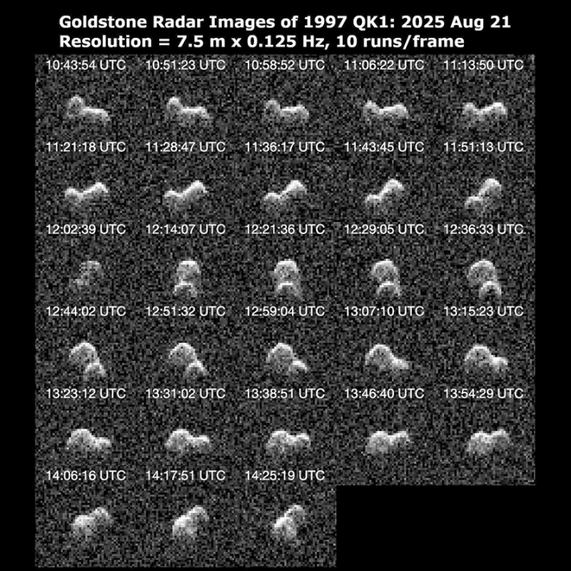

Rocketing by at tens of thousands of miles per hour, the asteroids visiting Earth’s neighborhood will get a closeup this week. Using radar, scientists will be scanning these space rocks as they whiz by our planet, creating newly detailed profiles of the near-Earth objects for further study.
The technology, deployed by NASA’s Deep Space Network Goldstone Solar System Radar, recently captured alluring new profiles of asteroid “1997 QK1,” which sailed by Earth last month in its closest approach in more than three and a half centuries. The “peanut”-shaped rock is about 600 feet across, and the more-than two dozen new radar images relayed novel information about its form and spin.
The radar system can reveal details about space rocks at a resolution of some 25 feet—not too bad for targets zipping by at such high speeds, often more than a million miles away. The resulting images can tell us a lot about these celestial near-Earth objects, including more information about their size and rotation, as well as their density.
Many of the objects the radars scan are almost complete unknowns to science. For example, this week, the asteroids the Goldstone radar will be profiling include an object known as “2025 QO1,” which was just discovered this August. It might be about 250 feet across, “but otherwise, nothing is known about its physical properties,” NASA reports.

MILLION-MILE CLOSE-UP: Scientists are using old tech to get new looks at passing asteroids. This new series of images, taken in late August, reveal never-before-seen details of a "peanut"-shaped asteroid as it flew by Earth. The radar system has a full calendar of other near-Earth objects to scan. Credit: NASA/JPL-Caltech.
Another object up for radar imaging is the 100-plus foot “2025 QV9,” discerned from data collected by the Pan-STARRS 1 telescope in Hawaii just a couple of weeks ago. This might not sound like too hefty of an object, as far as the cosmos go, but, as astrophysicist Paul Sutter explained for Nautilus, as recently as 50,000 years ago, a 150-foot wide asteroid collided with what is now Arizona, unleashing the energy “equivalent to 600 Hiroshima bombs … [and] a 1,000-mph wind blast more than two miles from the site.”
Finally, there is “2009 FF,” which was first documented in 2009 by the massive Mount Lemmon Survey in Arizona, an ongoing project that has been particularly successful in locating near-Earth objects. This week’s visit from 2009 FF, which seems to be about 500 feet across, will be the closest it comes to Earth for the next 149 years.
But even the closest of these, 2025 QV9 will still be at a reasonably comfortable distance from Earth, of about 1.2 million miles.
Later this month, the Goldstone radar system will also get a chance to scan “2025 FA22,” spotted earlier this year from the Pan-STARRS project in Hawaii and which was previously flagged as a potential impact object. That designation has been downgraded, but at close to 500 feet wide, it is the largest asteroid to get this close (within about half a million miles) to Earth since 2022, and it will likely maintain this designation until 2027. Like so many other near-Earth objects, “little is known about its physical properties,” as NASA notes. The upcoming radar imaging will likely reveal more about this close visitor.
You can see a list of the upcoming objects the radar system will be scanning here. And if you want a more in-depth picture of the hunt for potentially Earth-intersecting rocks from space, we have a story for you about the people leading this wild effort. 
Lead image: Triff / Shutterstock